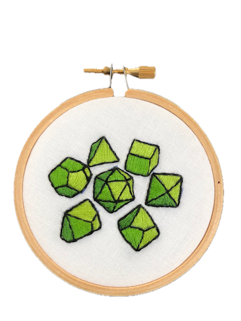

Settings

Places we've been:
- Waterdeep: our homebase
- The Haunted Manor: our bar
- City of the Dead: the cemetery
- Lumenate: the city north of us
- The Deaf Leopard: a bar that serves martinis
- The Old Lady: university library
- Colsham: Mairen's hometown
- The Silver Grove: Nick's mom's hippie retreat
- Malgali's castle: what it says on the tint
- Gatorio: Country to the east
- Barague: the capital city
- Altar of the Frozen Talon: monastery further north
- Dosalea: city in the Underdark
- Versperdon: an elf city
- Auridon: another elf city